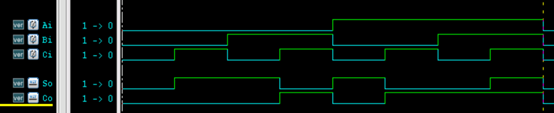

Palabras clave: assign, sumador completo
La declaración de asignación continua es la declaración básica del modelado de flujo de datos en Verilog, utilizada para asignar valores a variables de tipo wire:
El formato es el siguiente
assign LHS_target = RHS_expression ；
LHS (left hand side) se refiere al lado izquierdo de la operación de asignación, y RHS (right hand side) se refiere al lado derecho de la operación de asignación.
assign es una palabra clave; cualquier declaración de asignación continua que declare una variable wire comienza con assign, por ejemplo:
wire Cout, A, B ; assign Cout = A & B ; //实现计算A与B的功能
Cabe señalar que:
- LHS_target debe ser un escalar o un vector de red, y no puede ser de tipo registro.
- No hay requisitos para el tipo de RHS_expression; puede ser un escalar, un vector de red o un vector de registro, también puede ser una llamada a función.
- Siempre que ocurra un evento (cambio de valor) en los operandos de la expresión RHS_expression, RHS_expression se recalculará inmediatamente y se asignará a LHS_target.
Verilog también proporciona otro método simple para asignar variables de tipo wire, es decir, asignarles un valor al mismo tiempo que se declara la variable wire. Una variable de tipo wire solo puede ser asignada una vez, por lo tanto, este tipo de asignación continua también solo puede realizarse una vez. Por ejemplo, el siguiente método de asignación y el método de asignación del ejemplo anterior tienen el mismo efecto.
wire A, B ; wire Cout = A & B ;
Sumador completo
A continuación, se utiliza el método de descripción de flujo de datos para diseñar un sumador completo de 1 bit.
Sean Ai, Bi, Ci el sumando, el sumando y el acarreo de la posición baja adyacente, respectivamente; So, Co son la suma de la posición actual y el acarreo hacia la posición alta adyacente, respectivamente.
La tabla de verdad es la siguiente:
| Input | Output | |||
|---|---|---|---|---|
| Ci | Ai | Bi | So | Co |
| 0 | 0 | 0 | 0 | 0 |
| 0 | 0 | 1 | 1 | 0 |
| 0 | 1 | 0 | 1 | 0 |
| 0 | 1 | 1 | 0 | 1 |
| 1 | 0 | 0 | 1 | 0 |
| 1 | 0 | 1 | 0 | 1 |
| 1 | 1 | 0 | 0 | 1 |
| 1 | 1 | 1 | 1 | 1 |
La expresión del sumador completo es:
So = Ai ⊕ Bi ⊕ Ci ; Co = AiBi + Ci(Ai+Bi)
El código RTL (full_adder1.v) es el siguiente:
Ejemplo
input Ai, Bi, Ci,
output So, Co);
assign So = Ai ^ Bi ^ Ci ;
assign Co = (Ai & Bi) | (Ci & (Ai | Bi));
endmodule
Por supuesto, una descripción de código más cercana al sumador podría ser:
Ejemplo
input Ai, Bi, Ci
output So, Co);
assign {Co, So} = Ai + Bi + Ci ;
endmodule
El testbench (test.sv) se muestra a continuación como referencia:
Ejemplo
module test ;
reg Ai, Bi, Ci ;
wire So, Co ;
initial begin
{Ai, Bi, Ci} = 3'b0;
forever begin
#10 ;
{Ai, Bi, Ci} = {Ai, Bi, Ci} + 1'b1;
end
end
full_adder1 u_adder(
.Ai (Ai),
.Bi (Bi),
.Ci (Ci),
.So (So),
.Co (Co));
initial begin
forever begin
#100;
//$display("---gyc---%d", $time);
if ($time >= 1000) begin
$finish ;
end
end
end
endmodule
Los resultados de la simulación son los siguientes:
